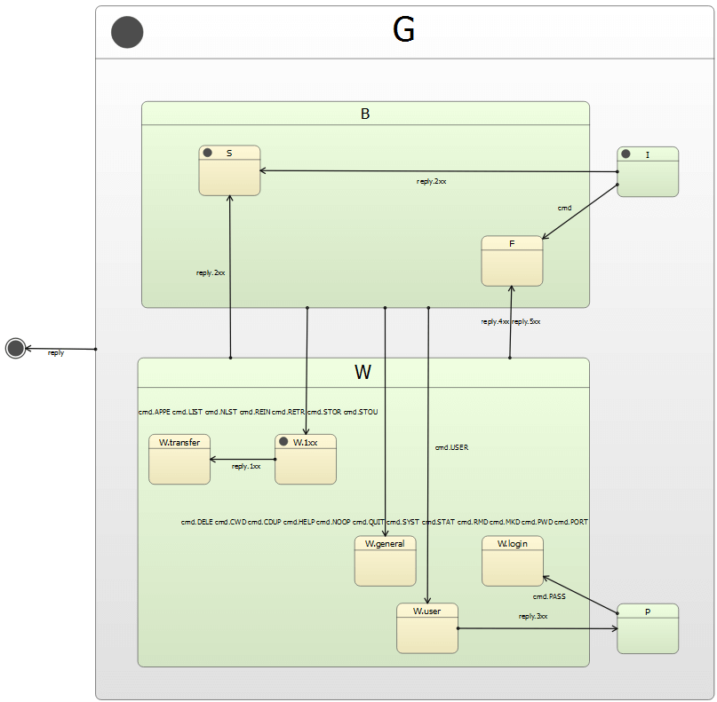

Qt SCXML FTP Client Example
Implements a simple FTP client using a state machine.
FTP Client uses Qt SCXML to implement a FTP client that can communicate with a FTP service by sending FTP control messages translated from state machine events and by translating server replies into state machine events. The data received from the FTP server is printed on the console.
RFC 959 specifies state charts for the command handling of the FTP client. They can be easily translated into SCXML to benefit from SCXML nested states. Connections between the client and server and data transfer are implemented by using C++. In addition, Qt signals and slots are used.
The state machine has the following states:

- I as the initial state.
- B for sending commands.
- S for success.
- F for failure.
- W for waiting for a reply.
- P for supplying a password upon server request.
The state machine is specified in the simpleftp.scxml file and compiled into the FtpClient class that implements the logic of the FTP protocol. It reacts to user input and to replies from the control channel by changing states and sending external events. In addition, we implement a FtpControlChannel class and a FtpDataChannel class that handle TCP sockets and servers and convert line endings.
Running the Example
To run the example from Qt Creator, open the Welcome mode and select the example from Examples. For more information, visit Building and Running an Example.
Compiling the State Machine
We link against the Qt SCXML module by adding the following line to the .pro file:
QT = core scxml network
We then specify the state machine to compile:
STATECHARTS += simpleftp.scxml
The Qt SCXML Compiler, qscxmlc, is run automatically to generate ftpclient.h and ftpclient.cpp, and to add them to the HEADERS and SOURCES variables for compilation.
Instantiating the State Machine
We instantiate the generated FtpClient class, as well as the FtpDataChannel and FtpControlChannel classes in the main.cpp file:
#include "ftpcontrolchannel.h" #include "ftpdatachannel.h" ... int main(int argc, char *argv[]) { ... QCoreApplication app(argc, argv); FtpClient ftpClient; FtpDataChannel dataChannel; FtpControlChannel controlChannel; ...
Communicating with an FTP Server
We print all data retrieved from the server on the console:
QObject::connect(&dataChannel, &FtpDataChannel::dataReceived,
[](const QByteArray &data) {
std::cout << data.constData();
});
We translate server replies into state machine events:
QObject::connect(&controlChannel, &FtpControlChannel::reply, &ftpClient,
[&ftpClient](int code, const QString ¶meters) {
ftpClient.submitEvent(QString("reply.%1xx")
.arg(code / 100), parameters);
});
We translate commands from the state machine into FTP control messages:
ftpClient.connectToEvent("submit.cmd", &controlChannel,
[&controlChannel](const QScxmlEvent &event) {
controlChannel.command(event.name().mid(11).toUtf8(),
event.data().toMap()["params"].toByteArray());
});
We send commands to log into the FTP server as an anonymous user, to announce a port for the data connection, and to retrive a file:
QList<Command> commands({
{"cmd.USER", "anonymous"},// login
{"cmd.PORT", ""}, // announce port for data connection,
// args added below.
{"cmd.RETR", file} // retrieve a file
});
We specify that the FTP client should send the next command when entering the B state:
ftpClient.connectToState("B", QScxmlStateMachine::onEntry([&]() {
if (commands.isEmpty()) {
app.quit();
return;
}
Command command = commands.takeFirst();
qDebug() << "Posting command" << command.cmd << command.args;
ftpClient.submitEvent(command.cmd, command.args);
}));
We specify that the FTP client should send an empty string as a password if the server asks for one:
ftpClient.connectToState("P", QScxmlStateMachine::onEntry([&ftpClient]() {
qDebug() << "Sending password";
ftpClient.submitEvent("cmd.PASS", QString());
}));
Finally, we connect to the FTP server specified as the first argument of the method and retrieve the file specified as the second argument:
controlChannel.connectToServer(server);
QObject::connect(&controlChannel, &FtpControlChannel::opened,
[&](const QHostAddress &address, int) {
dataChannel.listen(address);
commands[1].args = dataChannel.portspec();
ftpClient.start();
});
For example, the following invocation prints the specified file from the specified server: ftpclient <server> <file>.